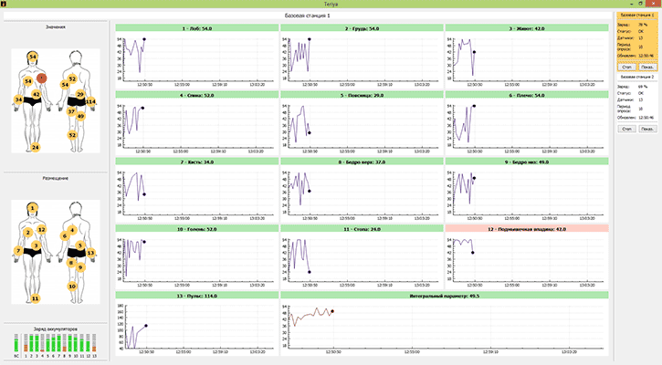
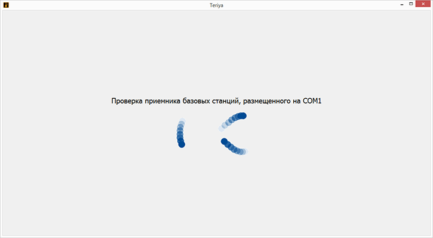

Входит в состав мобильного многофункционального аппаратно-программного комплекса длительного кардиомониторирования и эргометрии, предназначенного для быстрой и простой оценки состояния мышечных и сердечно сосудистой системы человека. Особенностью системы является возможность наблюдения обследуемого удалённым специалистом с помощью сети интернет.
Taly – программа для специалиста, позволяющая проводить статистический, спектральный и корреляционный анализ вариабельности сердечного ритма электрокардиосигналов записанных по методу Небу, а также оценки мышечной реакции на испытываемую нагрузку.
Использовалось:
C++, Qt, php(серверная часть)
Письменность
Инструкции и документы – лучший способ понять, как человек мыслит и понимает.
Ниже представлены ссылки на руководства пользователей, составленные для различных проектов:
Приложение предназначено для тестирования носимых модулей (электрокардиографического, электромиографического и инерциального) мобильного многофункционального аппаратно-программного комплекса длительного кардиомониторирования и эргометрии.
Cardiobugger работает под управлением Windows и Android. Позволяет разработчикам соединяться с модулями по Bluetooth с помощью профиля SPP и отправлять команды, согласно принятому протоколу связи. Приложение расшифровывает ответ устройств и отображает их состояние, поддерживает циклическую отправку запрос для стресс-тестирования.
Использовалось:
С++, Qt, QML, QtQuick
Teriya
Приложение было разработано для системы, позволяющей наблюдать за состоянием рабочих в условиях крайнего севера. Методика предполагает установку на тело человека в определённых местах от шести до двенадцати датчиков температуры и одного датчика пульса, которые по беспроводному радиоканалу передают показания на носимую базовую станцию, позволяющую по XBee отправляет собранные значения приёмнику базовых станцию оператора.


Teriya позволяет оператору настроить датчики и носимые станции, а также позволяет получать информацию об их состоянии. Имеется возможность просматривать показания каждого установленного датчика и значения интегрального параметра, отражающего общее состояние человека.
Использовалось:
С++, Qt
Linetion
Приложение входит в систему мониторинга состояния силовых трансформаторов электрических сетей, позволяющую операторам отслеживать показания установленных на подстанциях датчиков вибрации, тока и температуры.
Система поддерживает работу только с авторизованными операторами, предоставляет им возможность выбрать подстанции для наблюдения с возможностью загрузки данных за прошедшие периоды. Показания датчиков обновляются в реальном времени. Linetion информирует операторов, если наблюдаемые параметры выходят за допустимые границы.
Использовалось:
С++, Qt, php(серверная часть)
TrackWit
Приложение предназначалось для отладки интегрированной навигационной системы, содержащей GPS модуль и собственную инерциальную подсистему.
TrackWit содержит встроенный TCP/IP сервер для приёма навигационных данных от модулей и отображение их оператору на карте местности. Возможен выбор провайдера карт и сохранение их локально для использования без Интернет-соединения. Показывается пройденное расстояние и текущая скорость транспортных средств, на которых установлена навигационная система.